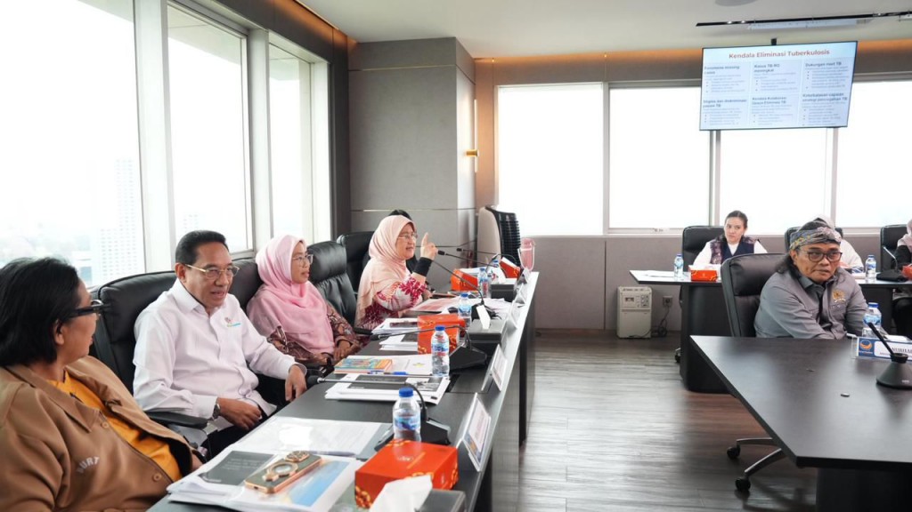
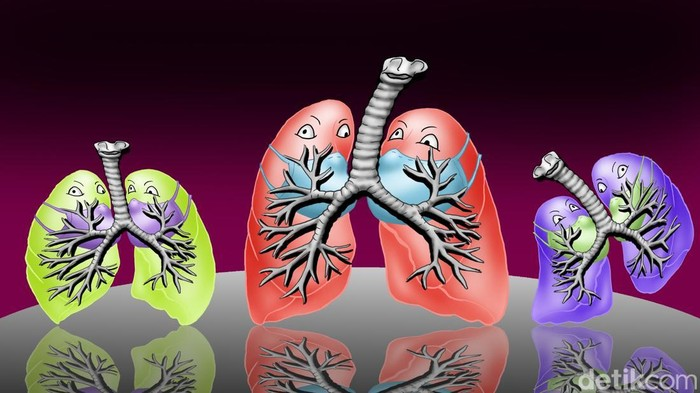

Berita Terkini
Mengenal TBC Ginjal: Gejala, Penyebab hingga Bahayanya
Penyakit tuberkulosis (TBC) selama ini lebih dikenal sebagai penyakit yang menyerang paru-paru. Nyatanya, TBC bisa juga menyerang ginjal seperti yang dialami oleh ...

Mahasiswa ITS Bikin Alat Deteksi TBC dari Suara Batuk
Tingginya penyakit Tuberkulosis (TBC) di Indonesia menyumbang beban kasus TBC terbesar kedua di dunia. Hal ini mendorong tim mahasiswa Institut Teknologi Sepuluh Nopember...

NasDem Berkomitmen Percepat Eliminasi TBC di Indonesia
Fraksi Partai NasDem DPR RI menegaskan komitmennya mempercepat eliminasi tuberkulosis (TBC) di Indonesia, menyusul tingginya beban kasus yang...

Pakar Singgung 'Slow Burn Epidemic' TBC di Malaysia, Bisa Menular Diam-diam
Malaysia kini tengah menghadapi tantangan serius melawan penyakit Tuberkulosis (TBC)...
Upaya Eliminasi TBC di Indonesia Dianugerahi 'Champion of Change Award'
Upaya Indonesia mempercepat eliminasi tuberkulosis (TBC) mendapat pengakuan dunia...
Wabah TBC Hantui Negara Tetangga RI
Sebanyak 503 kasus baru tuberkulosis (TBC) tercatat terjadi di Malaysia dalam periode satu minggu, tepatnya pada 1 hingga 7 Februari..